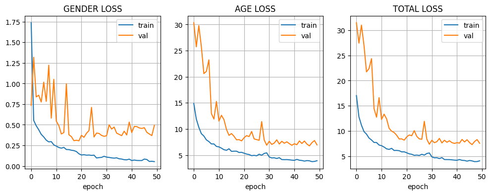
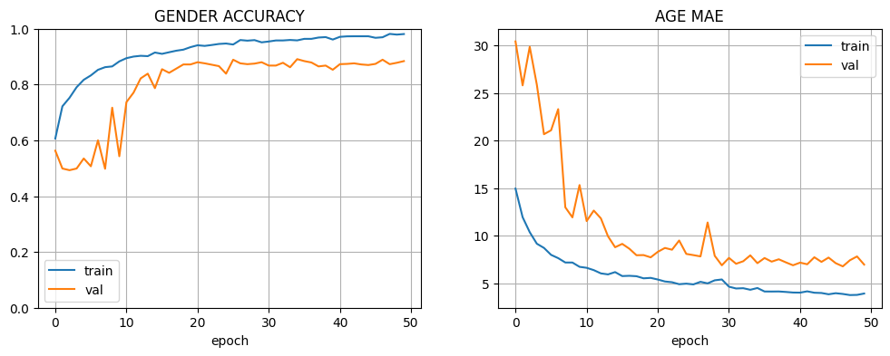

In this project a Convolutional Neural Network (CNN) model was trained to predict the age and the gender of a person using the functional API Keras. We used a subsample of 500 images of the UTKFace dataset as our training set. However, it is possible to modify and use different datasets. To create the CNN we used the functional API Keras version 3 that was integrated with Tensorflow. Now we are going to create a step by step solution.
The first step is to import all the necessary libraries for data manipulation, visualization, and building the model with TensorFlow/Keras.
from google.colab import drive
import os
import matplotlib.pyplot as plt
import cv2
import random
import tensorflow as tf
import keras
import numpy as npA simple variable to switch between Google Colab and local environments.
env = 'google_colab' # change to 'local' if not using ColabThe dataset is split into training (80%) and validation (20%) sets after being randomly shuffled.
all_image_files = [f for f in os.listdir(folder) if f.lower().endswith('.jpg')]
random.seed(0)
random.shuffle(all_image_files)
train_end = int(len(all_image_files) * 0.8)
train_image_files = all_image_files[:train_end]
val_image_files = all_image_files[train_end:]A function loads image data, extracts age and gender labels from filenames, and normalizes pixel values to the range [0, 1].
def load_imgs_lables(dataset_path, filenames):
print('load all image data, age and gender labels...')
images = []
age_labels = []
gender_labels = []
for current_file_name in filenames:
img = cv2.imread(os.path.join(dataset_path, current_file_name))
img = img / 255.0 # Normalize pixel values
labels = current_file_name.split('_')
age_label = int(labels[0])
gender_label = int(labels[1])
age_labels.append(age_label)
gender_labels.append(gender_label)
images.append(img)
train_images, train_age, train_gender = load_imgs_lables(folder, train_image_files)
val_images, val_age, val_gender = load_imgs_lables(folder, val_image_files)The datasets are batched to optimize training performance. A data augmentation layer is created to randomly flip images horizontally, creating more training samples.
# Batching
train_dataset = tf.data.Dataset.from_tensor_slices(...)
train_dataset = train_dataset.batch(batch_size)
# Augmentation Layer
data_augmentation_layers = [tf.keras.layers.RandomFlip("horizontal")]The model starts with a shared block that learns low-level features for both age and gender. It includes convolutional layers, batch normalization, and max-pooling.
input_shape = (128, 128, 3)
inputs = Input(shape=input_shape)
aug = data_augmentation(inputs)
conv_1 = Conv2D(32, (3, 3), padding='same', activation='relu')(aug)
conv_1 = BatchNormalization()(conv_1)
conv_1 = Conv2D(64, (3, 3), padding='same', activation='relu')(conv_1)
conv_1 = BatchNormalization()(conv_1)
conv_1 = MaxPooling2D(pool_size=(2, 2))(conv_1)This branch uses three convolutional blocks with L2 regularization to predict gender, outputting a value via a sigmoid activation function.
# Gender Branch
conv_2_g = Conv2D(64, (3, 3), padding='same', activation='relu', kernel_regularizer=l2(0.001))(conv_1)
conv_2_g = BatchNormalization()(conv_2_g)
conv_2_g = MaxPooling2D(pool_size=(2, 2))(conv_2_g)
# ... additional layers ...
flatten_gender = Flatten() (conv_2_g)
gender_fc = Dense(128, activation='relu')(flatten_gender)
gender_fc = Dropout(0.30)(gender_fc)
output_1 = Dense(1, activation='sigmoid', name='gender_out')(gender_fc)This branch is deeper, using five convolutional blocks to handle the more complex task of age regression. It uses a ReLU activation for its final output.
# Age Branch
conv_2 = Conv2D(64, (3, 3), padding='same', activation='relu')(conv_1)
conv_2 = BatchNormalization()(conv_2)
conv_2 = MaxPooling2D(pool_size=(2, 2))(conv_2)
# ... additional layers ...
flatten_age = Flatten()(conv_4)
age_fc = Dense(128, activation='relu')(flatten_age)
age_fc = Dropout(0.30)(age_fc)
output_2 = Dense(1, activation='relu', name='age_out')(age_fc)The model is compiled with the Adam optimizer and trained using binary cross-entropy for gender and MAE for age. An early stopping callback is used to prevent overfitting.
# Compile the model
opt = keras.optimizers.Adam(learning_rate = 0.001)
callback = keras.callbacks.EarlyStopping(monitor='val_loss', patience=20, restore_best_weights=True)
modelA.compile(loss={'gender_out': 'binary_crossentropy', 'age_out': 'mae'},
optimizer=opt,
metrics={'gender_out': 'accuracy', 'age_out': 'mae'})
# Train the model
epochs = 50
modelA_fit = modelA.fit(train_dataset, validation_data=val_dataset, epochs=epochs, callbacks=[callback])We observe noise in age and gender losses because of the low learning rate, because the model performs larger steps to find optimal values. We observe minor overfitting of gender and age, given the loss curves, mitigated by early stopping callbacks, returning the model weights to the epoch with the lowest validation loss.

Most gender accuracy improvement was observed in the first 10 epochs, plateauing afterward. A similar observation is seen in age in the first 20 epochs. Finally, we got an accuracy of 88% for gender and MAE of 6.95 years for age.
